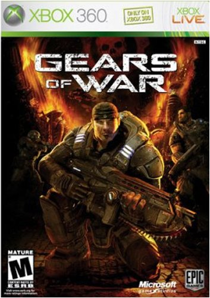

Xbox: Released in November 2001, it was Microsoft's first foray into
the console market.The console’s prototype was put together at first
as a side project, using Dell laptop parts and then Microsoft decided
to redesign it. This led Xbox to use the PC’s x86 architecture, a
build that was very rare for a console at the time. Microsoft
engineers originally called the console “DirectX Box“, named after the
DirectX graphics technology, that was developed for PC gaming and
later was shortened to Xbox. Xbox was the first console to have a
built-in Ethernet port, combined with a broadband connection. It was
the time were Xbox Live launched and Microsoft offered to players a
unique, steady and reliable online experience, but only with a
subscription. One of the biggest hits for Xbox was Halo, a
science fiction first-person shooter game, developed by Bungie, with
smooth and balanced gameplay followed with its sequel in 2004 were
more-than-enough reasons to buy an Xbox. Many Many other exclusive
titles followed like Ninja Gaiden and
Tom Clancy’s Splinter Cell: Chaos Theory, which helped a lot
the franchise to succeed.

Gears Of War c. 2006
Xbox 360: Released in November 2005, the Xbox 360 is a home video game
console developed by Microsoft. As the successor to the original Xbox,
it is the second console in the Xbox series. The Xbox 360 features an
online service, Xbox Live, which was expanded from its previous
iteration on the original Xbox and received regular updates during the
console’s lifetime. Available in free and subscription-based
varieties, Xbox Live allows users to: play games online; download
games (through Xbox Live Arcade) and game demos; purchase and stream
music, television programs, and films through the Xbox Music and Xbox
Video portals; and access third-party content services through media
streaming applications. In addition to online multimedia features, the
Xbox 360 allows users to stream media from local PCs. Several
peripherals have been released, including wireless controllers,
expanded hard drive storage, and the Kinect motion sensing camera. The
release of these additional services and peripherals helped the Xbox
brand grow from gaming-only to encompassing all multimedia, turning it
into a hub for living-room computing entertainment.
Xbox One: The Xbox One was released in November 2013 and Microsoft's
first conosole to promote an entertainment system, rather than a
gaming hub. At launch it included a number of video streaming
services, and there was the ability to route your cable box through
the console to be able to use it to watch live TV, even while you’re
playing games. It featured improved hardware, including an eight-core
processor and 8GB of RAM, and online gaming capabilities through Xbox
Live.
Xbox Series X/S: The most recent Xbox consoles, the Xbox Series X and
Series S were released in November 2020. They feature advanced
hardware, including a custom SSD for faster load times, ray tracing
capabilities, and backward compatibility with many Xbox 360 games and
Xbox One games.
Recent trends & developments
Xbox: Includes a separate operating system for many Xbox games.
Similarly to Playstation, it includes streaming services, friend list,
game achievement tracking, in-game communications and matchmaking
support for online games. Click here for more info